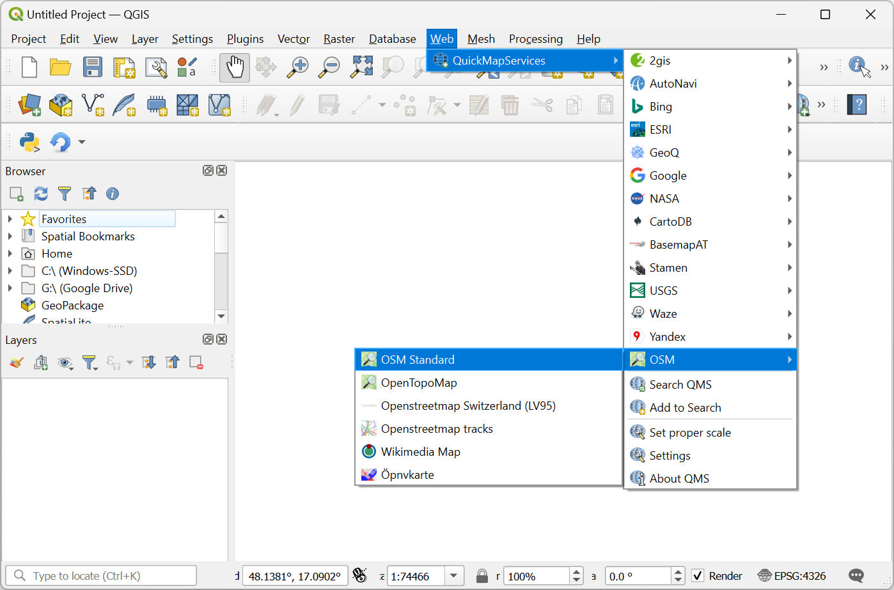
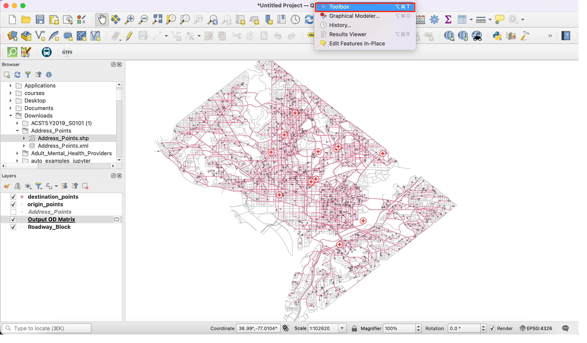
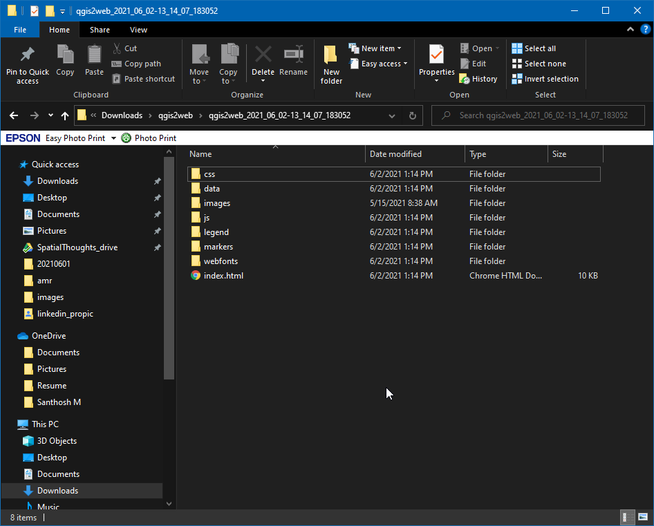
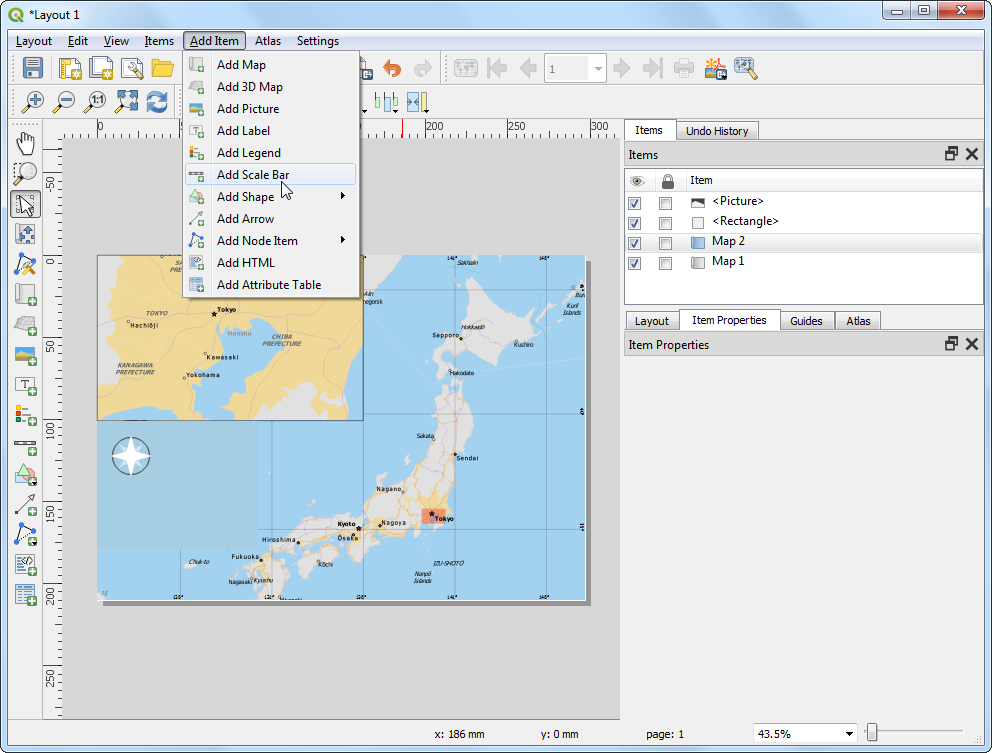

지도 만들기 (QGIS3)¶
종종 인쇄 또는 출판할 수 있는 지도를 만드는 것이 필요합니다. QGIS는 GIS 레이어를 가공하여 지도를 만들 수 있는 ‘인쇄 레이아웃’이라는 효과적인 도구를 가지고 있습니다.
작업 개요¶
이 지침은 지도 삽도, 그리드, 방위화살표, 축척 막대, 라벨과 같은 표준 지도 요소를 사용하여 일본의 지도를 만드는 방법을 소개합니다.
다른 스킬¶
QGIS 프로젝트 변수 보기 및 변경 방법
QGIS 표현식 사용 방법
데이터 가져오기¶
우리는 ‘Natural Earth dataset’ 중에서도 QGIS에 직접 불러올 수 있는 아름답게 스타일링된 전 지구적 레이어로써 ‘Natural Earth QuickStart Kit’를 사용할 것입니다.
Download the Natural Earth Quickstart Kit. If the download link doesn’t work, get it directly from Natural Earth Downloads page.
데이터 소스 [NATURALEARTH]
과정¶
Download and extract the Natural Earth Quick Start Kit data. Open QGIS. Locate the
Natural Earth quick startfolder in the Browser panel. Expand the folder to locate theNatural_Earth_quick_start_for_QGIS_v3project. This is the project file that contains styled layers in QGIS Document format. Double-click the project to open it.

참고
If you get a pop-up dialog named Handle Unavailable Layers, click the Auto-Find button followed by Apply Changes to fix the error.
If your map is in your preferred language, you can proceed to Step 4. If not, you can change the language of the labels. This project uses variables to set the language. We can change the variables by going to .

참고
주석
Switch to the Variables tab in the Project Properties dialog. Locate the
project_languagevariable and click on the Value column to edit it. Change the language toname_enand click OK.

Back in the main QGIS window, click the Refresh button in the Map Navigation Toolbar. You will now see the map rendered with English labels.

Use the pan and zoom controls in the Map Navigation Toolbar and zoom to Japan.

6. 이 지도에 필요하지 않은 데이터에 대해 몇 개의 지도 레이어를 끌 수 있습니다. 좌측 ‘레이어’의 ‘z5 – 1:18m’ 폴더를 확장하고 ‘ne_10m_geography_marine_polys’와 ‘ne_10m_admin_0_disputed_areas layers’ 옆의 확인란을 선택 해제하십시오. 인쇄에 적합한 지도를 만들기 전에, 우리는 적절한 투영(projection)을 선택할 필요가 있습니다. 프로젝트의 기본 좌표계(CRS)는 ‘EPSG:3857 Pseudo-Mercator’로 설정됩니다. 이것은 웹 매핑에 널리 사용되는 좌표계(CRS)이며 우리의 목적에 맞는 선택입니다. 따라서 우리는 그것을 기본값으로 둘 수 있습니다. ‘프로젝트 ‣ 새 인쇄 조판’으로 이동하십시오.

참고
주석
You will be prompted to enter a title for the layout. You can leave it empty and click Ok.

참고
주석
In the Print Layout window, click on Zoom full button to display the full extent of the Layout.

Now we would have to bring the map view that we see in the QGIS Canvas to the layout. Go to .

Once the Add Map mode is active, hold the left mouse button and drag a rectangle where you want to insert the map.

You will see that the rectangle window will be rendered with the map from the main QGIS canvas. The rendered map may not be covering the full extent of our interest area. Use and options to pan the map in the window and center it in the composer.

Let us also adjust the zoom level for the map. Click on the Item Properties tab and enter
10000000as the Scale value.

Now we will add a map inset that shows a zoomed in view for the Tokyo area. Before we make any changes to the layers in the main QGIS window, check the Lock layers and Lock styles for layers boxes. This will ensure that if we turn off some layers or change their styles, this view will not change.

Switch to the main QGIS window. Turn off the layer group
z5 - 1:18mand activate thez7 - 1: 4mgroup. This layer group has styling that is more appropriate for a zoomed-in view. Use the pan and zoom controls in the Map Navigation Toolbar and zoom around Tokyo.

We are now ready to add the map inset. Switch the the Print Layout window. Go to .

Drag a rectangle at the place where you want to add the map inset. You will now notice that we have 2 map objects in the Print Layout. When making changes, make sure you have the correct map selected.

Select the
Map 2object that we just added from the Items panel. Select the Item properties tab. Scroll down to the Frame panel and check the box next to it. You can change the color and thickness of the frame border so it is easy to distinguish against the map background.

One neat feature of the Print Layout is that it can automatically highlight the area from the main map which is represented in the inset. Select the
Map 1object from the Items panel. In the Item properties tab, scroll down to the Overviews section. Click the Add a new overview button.

Select
Map 2as the Map Frame. This tells the Print Layout to highlight the current objectMap 1with the extent of the map shown in theMap 2object.

Now that we have the map inset ready, we will add a grid to the main map. Select the
Map 1object from the Items panel. In the Item properties tab, scroll down to the Grids section. Click the Add a new grid button, followed by Modify grid….

By default, the grid lines use the same units and projections as the currently selected map projections. However, it is more common and useful to display grid lines in degrees. We can select a different CRS for the grid. Click on the Change… button next to CRS.

In the Coordinate Reference System Selector dialog, enter
4326in the Filter box. From the results, select theWGS84 EPSG:4326as the CRS. Click OK.

Select the Interval values as
5degrees in both X and Y direction. You can adjust the Offset to change where the grid lines appear.

Scroll down to the Grid frame section and check the Draw coordinates box. The default format is
Degreesbut it appears as a number. We can customize is to append a ° symbol. ChooseCustomand click the Expression button next to it.

Enter the following expression to create a string that takes the grid number and appends ° symbol to it.
concat(to_string(@grid_number), '° ')
Notice that the grids now have a custom label from the expression. Adjust the position settings for Left, Right, Top and Bottom as per your liking.

Now we will add a Rectangluar frame to hold other map elements like north arrow, scale and label. Go to .

You can change the Style of the rectangle to match the map background.

Now we will add a North Arrow to the map. QGIS comes with a nice collection of map-related images - including many types of North Arrows. Click .

Holding your left mouse button, draw a rectangle. On the right-hand panel, click on the Item Properties tab and select the SVG image section and scroll down to find arrows from the SVG Groups. Select the image of your liking.

31.이제 축척 막대를 추가할 것입니다. ‘Add Item ‣ Add 축척 막대’를 클릭하십시오.

Click on the layout where you want the scalebar to appear. In the Item Properties tab, make sure you have chosen the correct map element
Map 1for which to display the scalebar. Choose the Style that fit your requirement. In the Segments panel, change the Fixed width to200units and adjust the segments to your liking.

It is time to label our map. Click on .

Click on the map and draw a box where the label should be. In the Item Properties tab, expand the Label section and enter a label for the map. Similarly add another labels for data and software credits.

Once you are satisfied with the map, you can export it as an Image, PDF or SVG. For this tutorial, let’s export it as an image. Click .

Save the image in the format of your liking. Below is the exported PNG image.

If you want to give feedback or share your experience with this tutorial, please comment below. (requires GitHub account)